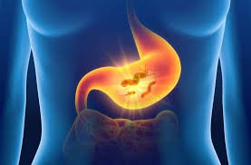

Norovirus
Cập nhật ngày 26 tháng 2 năm 2022
Các triệu chứng nhận biết của norovirus là nôn mửa và tiêu chảy ra nước, không lẫn máu. Các triệu chứng này thường bắt đầu trong vòng 12 đến 48 giờ sau khi bị phơi nhiễm và có thể kéo dài đến ba ngày. Hầu hết mọi người phục hồi hoàn toàn.
1. Norovirus là gì?
Norovirus là một loại virus dạ dày và ruột rất dễ lây lan. Nó dễ dàng lây nhiễm qua tiếp xúc trực tiếp hoặc gián tiếp với người bị bệnh. Nó có thể lây lan nhanh chóng trong các khu vực gần như bệnh viện, trường học và trung tâm chăm sóc ban ngày.
Hầu hết mọi người đều có thể bị nhiễm norovirus. Đây là một bệnh phổ biến của dạ dày và đường ruột. Norovirus cũng có thể là một nguồn gây ngộ độc thực phẩm, vì bạn có thể bị nhiễm vi rút này khi ăn thực phẩm bị ô nhiễm. Kết quả là như nhau cho dù bạn nhận được nó như thế nào.
2.Các triệu chứng của Norovirus
Các triệu chứng nhiễm trùng thường bắt đầu từ 12 đến 48 giờ sau khi bạn tiếp xúc với virus. Chúng có thể từ khá nhẹ đến nặng. Một số triệu chứng của norovirus là:
- Buồn nôn, ói mửa
- Co thắt vùng bụng và đau bụng
- Phân có nước hoặc tiêu chảy
- Sốt nhẹ
- Ớn lạnh
- Đau đầu
- Đau nhức toàn thân
Các triệu chứng thường kéo dài từ 24- 72 giờ. Đi khám bác sĩ nếu các triệu chứng vẫn tiếp tục kéo dài hoặc nếu bạn thấy máu trong phân. Tiêu chảy nặng có thể dẫn đến mất nước, nên được coi là một trường hợp cấp cứu y tế.
Mất nước có thể đe dọa tính mạng, đặc biệt là đối với những nhóm sau:
- Những người có hệ thống miễn dịch suy yếu
- Những người có vấn đề về sức khỏe
- Người già và trẻ nhỏ
- Người nhận cấy ghép nội tạng hoặc tế bào gốc
Người ta ước tính rằng trong một số trường hợp, khoảng 30% virus không gây ra triệu chứng gì, thường phổ biến ở trẻ em.
3. Nguy cơ mắc phải
Không có thuốc đặc biệt cho norovirus. Đây không phải là một bệnh nhiễm trùng do vi khuẩn, vì vậy thuốc kháng sinh sẽ không hữu ích. Điều trị chủ yếu là hỗ trợ, với mục tiêu ngăn ngừa mất nước.
Một số mẹo tự chăm sóc tại nhà:
- Nghỉ ngơi
- Đừng thúc ép bản thân. Hãy ở nhà và nghỉ ngơi.
- Bổ sung chất lỏng
Uống nhiều nước. Để thay thế chất điện giải, các giải pháp hydrat hóa đường uống, như Pedialyte, được khuyến khích cho mọi lứa tuổi. Chúng đặc biệt cần thiết ở trẻ sơ sinh và trẻ em.
Đồ uống thể thao, kem que và nước dùng chỉ nên cho trẻ lớn hơn và người lớn. Tránh xa đồ uống có đường vì chúng có thể làm tình trạng tiêu chảy trầm trọng hơn. Bạn cũng nên tránh đồ uống có chứa caffeine hoặc cồn
Tiếp tục chế độ ăn kiêng của bạn
Trẻ sơ sinh nên tiếp tục bú mẹ hoặc bú sữa công thức trong khi được bù nước.
Tuy nhiên, hãy gọi cho bác sĩ:
- Nếu bạn bị sốt
- Nếu bạn không thể ăn được chất lỏng
- Nếu tiêu chảy của bạn nghiêm trọng hoặc kéo dài hơn ba ngày
- Nếu phân của bạn có máu
- Nếu bạn có bất kỳ vấn đề sức khỏe nghiêm trọng nào từ trước
- Nếu bạn thường dùng thuốc theo toa nhưng không thể giảm
- Tiêu chảy kéo dài hơn ba ngày có thể dẫn đến các biến chứng nghiêm trọng do mất nước. Bạn có thể yêu cầu nhập viện để truyền dịch qua đường tĩnh mạch.
4.Thời kỳ ủ bệnh của Norovirus
Thời điểm bạn tiếp xúc với norovirus, có thể bạn sẽ không biết nó. Bạn có thể nhặt nó lên khi chạm vào bề mặt bị ô nhiễm hoặc từ thứ bạn ăn. Bạn cũng có thể lấy nó từ liên hệ giữa người với người. Sau khi cầm trên tay, bạn có thể dễ dàng chuyển nó vào miệng.
Thời gian nguồn gốc trung bình giữa lần tiếp xúc ban đầu và các triệu chứng đầu tiên, hoặc thời gian ủ bệnh, là khoảng 12 đến 48 giờ, với thời gian trung bình là 33 giờ.
Một số điều có thể làm tăng nguy cơ bị nhiễm trùng, chẳng hạn như:
Dành thời gian ở bệnh viện, viện dưỡng lão, trường học hoặc trung tâm chăm sóc ban ngày. Virus lây lan đặc biệt nhanh trong những khoảng thời gian gần nhau. Vì lý do này, rủi ro của bạn cũng có thể cao hơn trên tàu du lịch, khách sạn hoặc trong khu nghỉ mát.
Tiếp xúc với người bị bệnh, đặc biệt nếu bạn đang chăm sóc người bệnh và tiếp xúc với chất nôn hoặc phân của họ.
Dùng chung đồ ăn, thức uống, đĩa, cốc hoặc đồ dùng với người bị bệnh.
Ăn thức ăn hoặc đồ uống được chế biến trong điều kiện không hợp vệ sinh.
5. Norovirus lây truyền như thế nào?
Norovirus được ước tính gây ra 60% của tất cả các trường hợp viêm dạ dày ruột cấp tính do các mầm bệnh đã biết. Mầm bệnh là bất cứ thứ gì có thể gây bệnh, như vi khuẩn hoặc virus.
Việc lây truyền rất dễ dàng vì chỉ cần một lượng nhỏ vi rút là có thể gây nhiễm trùng.
Với thời gian ủ bệnh ngắn, bạn có thể lây lan trước khi bạn biết mình bị bệnh. Và bạn có thể bị lây nhiễm trong vài ngày đến vài tháng sau khi các triệu chứng biến mất. Nếu bạn có các vấn đề sức khỏe khác, bạn có thể bị lây lan lâu hơn nữa.
Các mầm bệnh có thể chịu đựng quá nóng và lạnh và có thể sống bên ngoài cơ thể trong vài ngày.
Cách lây lan chủ yếu của norovirus là đường phân-miệng, nhưng nó cũng có thể lây lan qua các giọt chất nôn. Điều này có thể xảy ra sau khi tiếp xúc giữa người với người, chẳng hạn như khi bạn bắt tay. Nếu bạn không rửa tay kỹ lưỡng, bạn chỉ cần một lần chạm vào miệng. Nó có thể lây lan nhanh chóng trong môi trường chăm sóc sức khỏe.
Sự lây truyền cũng có thể xảy ra gián tiếp, chẳng hạn như khi thực phẩm, nước hoặc các bề mặt bị ô nhiễm. Chỉ cần chạm vào tay nắm cửa hoặc điện thoại di động bị nhiễm bệnh có thể bắt đầu phản ứng dây chuyền. Khi ai đó nôn mửa, vi-rút có thể xâm nhập vào không khí, vì vậy nếu nó xâm nhập vào miệng của bạn, nó có thể đi vào đường ruột của bạn.

6. Norovirus gây bệnh như thế nào?
Khi bạn tiếp xúc với virus ,hoặc có thể bạn chạm vào công tắc đèn bị nhiễm virus hoặc nắm tay ai đó trước khi chạm vào miệng hoặc mũi của mình. Đó là khi những hạt nhỏ đó xâm nhập vào cơ thể bạn.
Bạn không biết khi các hạt đi xuống thực quản của bạn. Chúng đi qua dạ dày và đi vào ruột của bạn. Ruột là điểm ngọt của norovirus, nơi dường như diễn ra quá trình sinh sản nhanh chóng. Trong khi đó, hệ thống miễn dịch của bạn được cảnh báo về sự hiện diện của những kẻ xâm lược nước ngoài. Nó chỉ đạo một đội quân kháng thể tiêu diệt chúng.
Hầu hết thời gian, kháng thể của bạn sẽ tuyên bố chiến thắng vi rút trong vòng một đến ba ngày. Nhưng cơ thể bạn có thể tiếp tục thải vi-rút lên đến hai tuần hoặc lâu hơn.
Norovirus tái phát
Với một số bệnh, chỉ nhiễm một lần duy nhất sẽ mang lại cho bạn khả năng miễn dịch suốt đời. Nhưng đó không phải là trường hợp của norovirus. Không có vắc-xin và việc có vắc-xin một lần sẽ không giúp bạn khỏi bị lại. Trên thực tế, bạn có thể nhận được nó nhiều lần trong suốt cuộc đời của bạn.
Nếu bạn vừa trải qua một đợt norovirus, thì không rõ bạn sẽ có khả năng miễn dịch tạm thời trong bao lâu. Tuy nhiên, có nhiều chủng loại khác nhau, vì vậy không có gì đảm bảo rằng bạn sẽ không có một đợt khác trong thời gian ngắn.
Nếu vi-rút đang di chuyển xung quanh gia đình hoặc nơi làm việc của bạn, hãy thực hiện các biện pháp phòng ngừa để giảm nguy cơ tái nhiễm.
- Rửa tay kỹ lưỡng và thường xuyên, đặc biệt là sau khi đi vệ sinh, thay tã, hoặc chăm sóc người bệnh. Rửa tay trước khi chế biến hoặc ăn. Rửa tay bằng xà phòng hoặc sử dụng chất khử trùng tay có cồn.
- Cố gắng không chạm tay vào mặt.
- Không dùng chung dụng cụ ăn uống, cốc hoặc đĩa.
- Rửa sạch hoa quả trước khi ăn.
- Tránh hải sản sống.
- Khi có thể, hãy tránh xa những người bị nhiễm bệnh. Ở nhà khi bạn bị ốm.
- Nếu bạn thường xuyên bị nôn mửa hoặc tiêu chảy, hãy đến gặp bác sĩ để đảm bảo đó là vi rút norovirus. Họ có thể thu thập mẫu phân để xác định chẩn đoán.